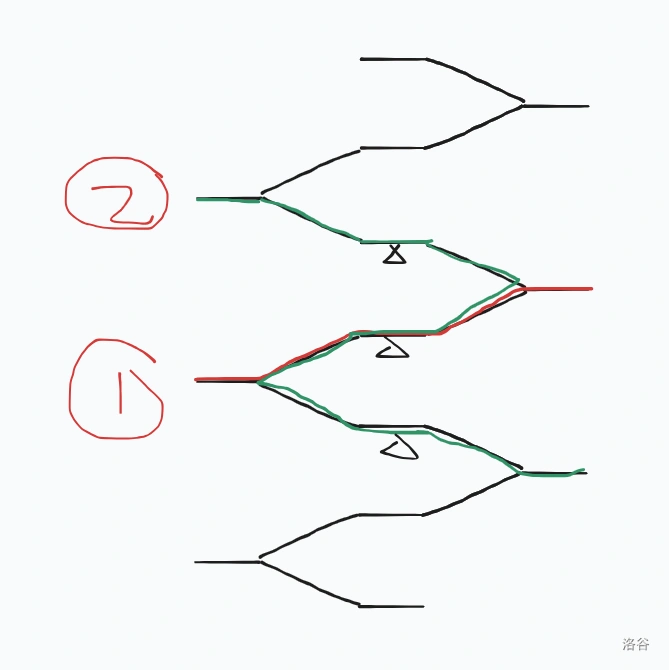
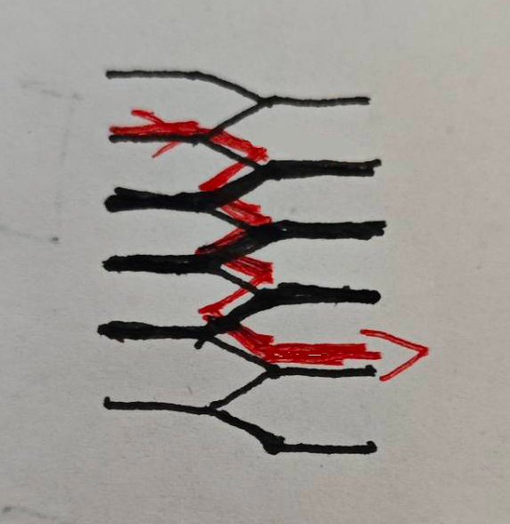

原题链接
原比赛的 D 题。（虽然是乱序的）
题目大意：给你 n 个环形点位，每一个点位都有一个权值 Ai。你可以在一些点位上种一颗树，这样每个点 i 获得的价值是 Ai，树不能相邻，求最大化权值。
我用一种很奇怪的思路解释一下反悔贪心。
实际上你可以想象把它建模成一个**“不考虑边界的”**费用流模型。
如下所示：

令中间的横着的边的容量最大值是 1，代表这个点是否被选择。
详细的图像解释在 https://www.luogu.com.cn/discuss/1397248 里面有。
考虑退流操作时，如果有连续的 1，退流路径就会长得像个很多个 z 连在一起一样。

所以我们考虑维护这个“连续的 1”，加快退流进程。
也就是说，我们考虑“当一串 1 被选择时，如果左/右的边界点有退流请求，带来的收益是多少”。
所以我们就可以用所谓的反悔贪心 + 链表写这么个玩意。
至于为什么不需要考虑边界，因为对于有偶数个点来说，费用流的图像是本身就能够建成，这种情况下正确性显然。
那么对于奇数点的情况，观察可以发现在可能的填满树的方案下一定存在连续的两个空位。这两个空位感性理解一下就相当于起到了破环的作用。
因此不用显式的考虑费用流长什么样。首先我在一开始的时候特判一下 M 是不是大于 N/2 就可以了。
code:
1
2
3
4
5
6
7
8
9
10
11
12
13
14
15
16
17
18
19
20
21
22
23
24
25
26
27
28
29
30
31
32
33
34
35
36
37
38
39
40
41
42
43
44
45
46
47
48
49
50
51
52
53
54
55
56
57
58
59
60
61
62
63
64
65
66
67
68
69
70
71
72
73
74
75
76
77
| #define fastio ios::sync_with_stdio(0);cin.tie(0);
#include<bits/stdc++.h>
using namespace std;
typedef long long ll;
const int maxn=200035;
const ll inf=1e18;
int n,m;
ll a[maxn];
void input(){
cin>>n>>m;
for(int i=1;i<=n;++i){
cin>>a[i];
}
}
inline int pre(int x){
if(x==1) return n;
else return x-1;
}
inline int nxt(int x){
if(x==n) return 1;
else return x+1;
}
typedef pair<ll,int> PII;
priority_queue<PII> que;
int L[maxn],R[maxn];
ll ans;
void calc_LR(){
for(int i=1;i<=n;++i){
L[i]=pre(i);
R[i]=nxt(i);
}
}
void del(int x){
R[L[x]]=R[x];
L[R[x]]=L[x];
L[x]=R[x]=0;
}
bool isdel(int x){
return L[x]==0||R[x]==0;
}
void solve(){
for(int i=1;i<=n;++i){
que.push({a[i],i});
}
int cnt=1;
while(que.size()&&cnt<=m){
auto pr=que.top();
int x=pr.second;
ll val=pr.first;
que.pop();
if(isdel(x)) continue;
int l=L[x],r=R[x];
ans+=val;
a[x]=a[l]+a[r]-a[x];
del(l);del(r);
que.push({a[x],x});
++cnt;
}
printf("%lld",ans);
}
int main(){
fastio;
input();
if(m*2>n) puts("Error!");
else{
calc_LR();
solve();
}
return 0;
}
|